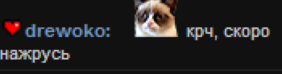

Всем привет, я drewoko!
По всем вопросам можно писать ко мне в Skype, он такой же как и мой никнейм.
Так же прошу не распространять и не копировать этот текст без моего разрешения.
Спросите зачем я это написал? Ответ вы найдете, прочитав статью.
Хочу поблагодарить всех людей, которые помогали писать и править эту статью. Так же, человека, который
помогал мне с мелкими графическими справлениями.
Добрый день. Надеюсь, что вы скоро сдохнете. Но хочу вам представить долгожданную вами вторую часть так
называемых мемуаров. Прошу прощения, что так задержался, на это было несколько причин, которые со
временем начали исчезать и только пара вещей до сих пор меня смущают. Также постоянное напоминание со
стороны администрации СК2ТВ в стиле - “Про нас написал, а про него не хочешь”, мне изрядно надоели.
Открою вам небольшой секрет - Я писал этот текст раза три, его видели два-три человека. Два из них в
оффлайне и один человек Pollen, да простит она меня, что я это упомянул. Но она видела самую первую
версию этого текста, самую эмоциональную и которая содержала очень много моментов перехода на личности.
Эта версия текста была еще до мемуаров про работу на SC2TV. К сожалению для вас вы ее не увидите и даже
я ее не увижу, потому что, видимо, я ее потерял. Следующие две попытки были незаконченными, я пытался их
писать их в разных стилях, но результат меня не устраивал. Так как эта версия будет более спокойная и
много эмоций стерлось уже за это время, то думаю она получится для вас не такой интересной. Скорее
всего, она получится в виде рассказа о моем провале. Также перед написанием я освежил память, прочитав
логи рабочей конференции, которые завалялись на старом бэкапе тайм-капсулы (Спасибо Apple), прочитал
ватс. И конечно я буду стараться касаться вопросов личной жизни и финансов. Также выражаю глубокое
уважение ко всем участникам этого рассказа и в частности Денису.
Как всегда предупреждаю, что это видение ситуации только с моей стороны, которое было сточено временем,
и оно может в корне не совпадать с мнением другой стороны. Но так как на “Бизнес по-русски” я уже
наталкивался пару раз с примерно одними и теми же симптомами, я хочу, чтобы люди больше не натыкались на
такое и поэтому надо чуть-чуть дать огласку тому, что происходило и о чем я переживал очень долгое
время. Еще раз прошу прощения у всех участников этого рассказа.
Как и в прошлых мемуаров начнем с меня. Кто я такой? Какая моя квалификация?
Почему я такой? Я житель Эстонии, который говорит по-русски и до SC2TV, про работу на котором я писал в
прошлой части, очень мало сидел в так называемом Рунете. Вы знаете меня под такими псевдонимами или
прозвищами как: drewoko, Дрешоко, Древака, Кот и Котонюх или Алкоголик (да, да у меня были проблемы с
алкоголем). У меня довольно странный пессимистический характер диктатора над самим собой. Я сейчас
работаю в
одной большой компании программистом, в отделе, занимающимся суб-оборонными заказами. До этого я
поработал в
одном финансовом стартапе программистом, а до этого в скайпе/майкрософте и в маленькой IT компании
системным
администратором. До этого, когда еще учился, написал одну систему заказами для одной фирмы, которая на
гос.
уровне занимается заказами от больниц на имплантаты и инструменты. Так что я довольно уже давно кручусь
в ИТ
сфере, работал в больших проектах и не разу я не видел такого, что было при работе на СК2ТВ и на работе
с
WLG. Тем более я привык доверять словам людей, с которыми я работаю.
Работа над проектом началась двадцать седьмого июля 2014 года, но до этого мы с Денисом познакомились
так сказать голосом на одной из конференций по организации одного из прайм-таймов, где мы проводили
некий тестовый стрим, который Денис запустил. Денис тогда пытался руководить процессом для подготовки
Prime-Time 3.0. Там он играл роль управляющего лица, который руководил процессом и показался мне
человеком, который очень адекватный и более или менее понимает, что делает и говорит. В общем, он мне
показался приятным человеком. Дальше произошел какой-то очередной так сказать “срачик” на СК2ТВ, после
которого у многих в очередной раз зародилась идея с тем, что пора придумывать запасной план. Следующая
встреча уже в реальной жизни у меня с Денисом произошла после ухода Гитмана с портала Руслана на даче
СК2ТВ. Там была пара очень странных хулиганских предложений мне, от которых я отказался, которые я
оставлю за пределами этого рассказа. Но главное, что я от Дениса услышал в тот день, будучи уже поддатым
от пары стаканов виски, то что он хочет сделать свой сайт и хочет его развивать и то, что ему нужны
разработчики. На том все и затихло на некоторое время, я работал с командой ск2тв и было вроде все более
или менее, до определенного момента.
К сожалению я уже не помню, что меня сподвигло. Это был или уход
всей модерации или команды фан-стримов, но в тот момент я решил, что надо попробовать двигаться дальше и
попробовать создать себе новый дом, где было бы комфортно не только мне, но и всем, кому надоела
странная политика администрации портала СК2ТВ. Вот поэтому я решил, что одному создавать это совершенно
безнадежно и надо заручиться хотя бы какой-то аудиторией и надо было найти некий символ или бренд.
Вспомнив наш разговор с Денисом и вспомнив, что по моему мнению он хороший руководитель я решил поднять
эту тему, написав Денису и мы, пару раз поговорив, начали разрабатывать план.
Совместная работа началась с совместной встречи на пару дней. Пожалуй, от этой части у меня остались
только хорошие воспоминания. Мы составили некие наброски плана, что-то вроде даже записали. Мы искали
людей и я предложил моего друга, Александра, на роль второго программиста. Также в постоянной команде
был Дизайнер, которого звали Демид (простите, могу напутать имя) и второй дизайнер и подручный Дениса,
которого тоже звали Александр, но я буду называть по его никнейму - Кубиро, чтобы не путать вас в
тексте. Также был один программист-стажер, который был отлучен от команды и который выполнял
вспомогательные задачи. Денис хотел зарегистрировать фирму, чтобы за проектом стояло что-то официальное
и он спросил меня, по какой схеме мы будем это регистрировать, не хочу ли я быть сооснователем этой
фирмы. Я, к моему сожалению, ответил нет и сказал, что я могу быть контактным лицом. Во-первых, это бы
мне создало дополнительные действия в налоговой декларации, которых я стараюсь избегать, во-вторых, я
был погружен в эту магию Дениса и мне казалось, что такой человек будет всегда честен и не может
“кинуть”. Да, такое ощущение у меня было от Дениса и да, я сделал ошибку, которая аукнулась мне, что не
заверил отношения хотя бы так юридически. Я работал на проекте совершенно бесплатно, при этом тратя свои
деньги на различные сервисы для разработки и хостинга, на зарплату третьим лицам, так как я думал, что
часть этого проекта моя и мы работаем как полноценные партнеры. Как же я сильно ошибался, но об этом вы
узнаете дальше.
Набор команды происходил очень сложно. Мы искали дизайнера и еще одного программиста. Я предложил Сашу
на роль второго программиста. Денис по всей видимости, после пары неудачных интервью согласился. Демида
вроде бы нашли довольно быстро, в первые дни разработки. А вот с третим программистом была очень
странная ситуация. Мы проинтервьюировали несколько кандидатов и ни один не устроил и Дениса и меня на
сто процентов. Поэтому я принял решение, взять в помощь одного учащегося программиста, который вроде
понимал, что делает. К сожалению, Денис был полностью против, чтобы включать его в состав основной
команды и даже не удосужился с ним поговорить лично и пригласить в нашу рабочую конференцию. В итоге наш
формат с ним работы был по типу я даю вспомогательные задачи программисту, он их выполняет, не имея
доступа к нашим документа, идеям и системе контроля версий.
Изначально я предложил простую схему - Написать Альфу/прототип с четким техническим заданием, без особых
изменений, а потом от сделанной базы продолжать работу. Все вроде бы согласились и поддержали. Сама
работа была организована изначально очень просто, табличка с задачами на человека, документ
расписывающий функционал, который должен был быть в этой первой версии сайта, документ с
административной информацией, скайп конференция и пару раз в неделю созвоны. Все должно было быть
довольно просто. Денис с его подручным пишут так называемое техническое задание, делают административную
работу и с дизайнером занимаются обсуждением и работой над дизайном. А мы с моим другом и с
программистом-стажером делали саму разработку портала.
Мы все на то время были работающими людьми, которые утром зарабатывали себе на хлеб, кроме третьего
программиста, который до сих пор учился, а вечером мы занимались проектом, что было лично для всех очень
изматывающим. Настолько сильно, что через три месяца работы в таком темпе я был похож на зомби. Помню,
мне коллега по работе сказал, что я выгляжу как труп, что лучше всего описывало мое физическое и
психологическое состояние.
Насколько я сейчас помню, у нас были совещания два-три-четыре раза в неделю в зависимости от нашей
занятости, плюс постоянные созвоны один на один. Мы обсуждали текущие вопросы, как будем делать то или
то, как можно сделать это или как нельзя делать и так далее. Также обсуждали некоторые административные
вещи. Все было хорошо поначалу. Собрания были быстрые, но потом что-то пошло не так. От важных моментов,
которые надо было обсуждать, Дениса тянуло всё больше и больше в сторону отвлеченных тем. Не сказать,
чтобы темы совсем отвлеченные, но они касались или очень далекого будущего или стримов самого Дениса.
Все бы ничего, если бы была тонна времени на работу и на разработку и мы работали над этим проектом с
утра до вечера по восемь часов. А так, как по мне, это была лишняя трата времени, которая очень сильно
мешала продуктивно работать.
Ну это еще не все! С каждым совещанием все больше и больше они уделяли внимание разработке дизайна и
Денис хотел, чтобы вся команда присутствовала на этом всем. Все больше и больше времени отнималось от
продуктивной моей работы, на обсуждения по полчаса одной кнопки или одному разделу в каком-нибудь меню.
Что как по мне выглядело очень странно. Зачем техническим людям тратить свое время на обсуждение
дизайна? Я понимаю, когда составляется список вопросов, как и что можно и почему или когда спрашивают
отдельно мнение о дизайне.
Меня такое положение дел совершенно не устраивало. Я пытался донести, что это для нас не очень
продуктивно. Но, к сожалению, Денису всё больше и больше приходило в голову отстраненных от текущей темы
идей и все больше и больше напрягал он дизайнеров и нас, программистов, заставляя придумывать то или
иное решение его идеи. Кучу времени мы потратили на попытки отговорить Дениса от траты времени на
развитие заглушки, он предлагал ввести там дополнительные мини-игры, эволюционировать ее в
пост-апокалиптический сеттинг с зайцем убийцей. Отговаривали от мини-игр под чатом на разных ненужных
рюшечек на самом сайте.
Как я уже писал, мы договаривались, что надо составить изначальный план и придерживаться его как можно
дольше без изменений, а точнее до релиза первой/альфа версии. И да, это нормально, когда это маленькие
правки, которые постоянно появляются в обычной работе с неким прогрессом. Но к сожалению, Денис не ввёл
список изменений и не вносил правки в документ, после совещаний, по которому мы, программисты, работали.
Это вносило очень много проблем и в итоге разногласий. Так же не был проделан анализ ключевых моментов,
приходилось из головы придумывать, как это реализовать, потому что попросил неделю назад некие хотя бы
наброски анализа, но приходилось ждать очень много времени, чтобы выжать хотя бы что-то. Таким образом,
мне в середине разработки пришлось три раза переписывать систему личных сообщений, хотя для старта можно
было использовать то, что было в набросках и переписать это уже после какого-то результата.
В итоге, на пост человека, который пытался уследить за мыслями Дениса и пытаться вести некую
административную деятельность стал второй дизайнер Кубиро, благодаря которому появились хотя бы какие-то
позитивные подвижки с документацией.
Чуть-чуть про работу нашего первого дизайнера - Демида. Демид, как по мне отличный дизайнер с опытом
работы и пониманием того, как расположить элементы на странице, как подобрать цветовую гамму и в общем,
как сделать все красиво. Он делал все это довольно быстро, настолько быстро, что это меня удивляло. И он
брал совсем немного денег за свою работу. Но к сожалению, постоянные придирки Дениса, к макету до
позиционирования каждого пикселя, видимо начали надоедать или у него перестало хватать времени на
совещания по дизайну, тут я могу только угадывать. Была смешная ситуация, когда Денис сказал по поводу
какой-то кнопки “grayed out” и Демид с первого раза не понял, что это Денис сказал и что это значит.
Из-за этого столько было критики в сторону Демида со стороны Дениса, что я сильно удивился. Потом Денис
просил исправлять работу Демида, второго дизайнера Кубиро своими хотелками и маниакальным
перфекционизмом. А в дальнейшем Денис попросил Димида отстраниться и передать всю работу Кубиро. Для
меня до сих пор загадка, почему это произошло, что могло сподвигнуть Дениса к такому странному решению.
Чрезмерный перфекционизм до мозга и костей Дениса, не позволил не обращать внимание на мелочи, ради
более быстрого рабочего прогресса. Поговорив с Демидом после всего этого, я понял, что он испытывал
огромный стресс при работе с Денисом.
Многие уже заметили, что я не самый приятный человек, которого вы видели и с кем вы общались. Но еще
проблема в том, что я такой же и в реальной жизни после адаптационного периода. Такая же двуличная
сволочь. Что поделать, такой характер, который поменять не представляется возможным. В самом начале
общение было спокойным, никто ко мне претензий не предъявлял, но спустя месяц-полтора активной работы
началось. Что началось вы спросите? А то, что со стороны Дениса начались претензии к моему общению и
моему поведению на СК2ТВ. Все вы знаете, как я общаюсь с людьми. Я могу пожелать им смерти, послать куда
подальше, не очень лестно высказываться о каких либо вещах, не фильтруя поток мыслей, делать что-то
необдуманное и самое мое любимое, я люблю выпить вечером стаканчик хорошего бурбона, с чем я с радостью
делюсь после работы со всеми, кто находится в данный момент в моем окружении.
Один из очередных споров по этой теме возник, когда Денис скидывая
эту 
картинку, и начинает в очередной раз свою тираду на тему
достоин ли я быть лицом нашего нового портала.
Я понимаю, если бы было официально заявлено, что я работаю над этим проектом, но в тот момент про это
знал только избранный круг людей. И я был против публичности в тот момент, по поводу моей работы над
этим проектом. Так что я как всегда в ответ начал отвечать в одном и том же стиле, одни и те же слова -
“Я уже писал и говорил тебе лично, что не буду менять свое поведение, ты мне не отец, чтобы указывать,
как мне себя вести. Я не являюсь публичным лицом для этого проекта и люди не знают, что я работаю. И я
против упоминания меня в контексте этого проекта в данный момент на публике.”. Однажды Денису не
понравилось, моя пессимистическая реакция на отзывы по поводу дизайна, часть которого мы выложили на
нашу заглушку, на которую мы потратили какое-то дикое количество времени. И тогда началась очередная
сессия попытаться промыть мне мозги по поводу поведения и того, что надо быть оптимистом с общим
посылом, что нужно носить розовые очки.
Как вы уже знаете, нас была одна рабочая конференция, что должно было быть достаточно, чтобы все были в
курсе всего и чтобы не плодить много сущностей на маленькую команду. Так вот и работу с программистами,
и переписку, мы вели в той же конференции. Было все нормально, мы перебрасывались техническими
терминами. Но однажды что-то произошло и Денис высказался в конференции, что он не понимает, что тут
написано и почему ему надо это читать, если никто кроме программистов это не понимает. Вдобавок он
требовал, чтобы ему мы объясняли эти технические моменты, тратя время, которое было положено на
разработку.
Люди не могут всё помнить, у людей память ограничена и часто наш мозг не может запомнить некоторых
мелочей. Причем этим страдают все люди. Так вот и я человек с не идеальной памятью на все мелочи и к
сожалению забываю некоторые вещи. Тем более когда таких вещей становится очень много. Как, что и почему.
Не только по технической части и по части технического задания, по части дизайна и по административной
части. Один раз я спросил, какой новый пароль от аккаунта, который был написан в нашей рабочей
конференции пару дней назад. И спокойно сказал в конференции, что почему-то пароль не подходит. В ответ
я увидел, что-то вроде - “Ты опять меня слушал одним местом, я отчетливо сказал с 666 в начале”. На
работе я такого никогда не слышал, если кто-то что-то забывал - мы друг другу помогали вспомнить или
найти информацию.
Как все знают, я долгое время сотрудничал с СК2ТВ и даже во время работы с Денисом я продолжал помогать
им по мере возможностей. Но нет, я не работал над кодом FunStream. И нет, я не читал ТЗ по FunStream
полностью. У меня был только маленький кусочек про чат, который дал мне Руслан и который я скорее всего
упоминал в прошлой части. Дениса не устраивало, что я помогаю, как системный администратор, СК2ТВ. И
даже когда перед дачей СК2ТВ, когда на СК2ТВ были какие-то технические проблемы, он очень косо смотрел
на меня и говорил - “Ты что, опять помогаешь СК2ТВ?”. Хотя я не участвовал в разработке нового портала
Руслана. И этот вопрос всплывал очень часто. И мой ответ был примерно один и тот же. Я помогаю СК2ТВ,
нет я не сдам свои права пока меня не попросят уйти, нет, я не помогаю разрабатывать код нового сайта
Руслана.
Обманутые ожидания - это самое страшное, что может произойти в команде. Скорее всего, я обманул ожидания
Дениса, но в этом вопросе он не одинок. Делая выводы из всего нашего рабочего процесса, я понимаю, что я
зря доверился руководящим возможностям Дениса. То, что вы прочитали выше, это мелочи, которые выливаются
в огромную проблему. Было ощущение, что в воображении Дениса наш временной ресурс не ограничен и все
должны быть на уровне его безумного перфекционизма, которым он сам себе вставляет палки в колеса своего
поезда.
Как вы думаете, сколько раз нужно спросить человеку один и тот же вопрос в надежде получить другой
ответ? Я отвечу за вас, ответ не изменится от количества раз заданного одного и того же вопроса. А вот
Денис считает, что можно задавать один и тот же вопрос бесконечно, в надежде, что ответ может
измениться.
Было много курьезных ситуаций, но есть несколько показательных, которые заслуживают рассказа. Точнее, в
этой части их будет две, а еще одна будет ближе к финалу. Начнем с самого безобидного случая. Нам надо
было получить какой-то “аппрув” от Amazon AWS, чтобы не упираться в их лимиты, для продолжения работы
над каким-то модулем и активного тестирования. Прошу прощения, что я не помню, что это было, так как уже
прошло два года. И я попросил Дениса в общем рассказав, что да как и куда написать и переключился на
другие задачи. Как вы думаете, что было дальше? Прошло два дня, я спрашиваю, было ли отправлено письмо?
Получаю отрицательный ответ. Спрашиваю еще раз опять через пару дней и получаю тот же ответ. В итоге
пришлось мне с ним после собрания просить в голосовом чате еще раз написать и тогда мы вместе написали
его от его имени. Эта задержка была не критична, но довольно неприятна. Вопрос - Почему вышла такая
задержка в написании простого письма из пары строчек? Если бы это было в непонимании предмета, по сути
которого надо было написать в Amazon AWS, то можно было попросить у меня помощи или переспросить. Как по
мне, это обычное дело! А вот когда кормят “завтраками”, это уже непорядок.
Следующая история произошла, когда подходило время к альфа-тестированию без натянутого дизайна.
Спросите, почему без дизайна? Ответ прост, он еще не был даже близко готов, к нарезанию и верстке по
причинам, которые были описаны выше. И нам понадобились доверенные люди, которые понимали что-то в ИТ и
смогли бы протестировать эту версию базового функционала. К сожалению, Денис не смог предложить людей на
эту роль, пришлось прибегнуть к помощи моих знакомых с СК2ТВ, у которых был хотя бы какой-то опыт в ИТ.
Так как Денис знал всех этих людей, я попросил его всем им написать, обговорить вопросы о неразглашении
и собрать людей в одно время.
Денис согласился и сказал, что выполнит эту работу в ближайшее время. Все вроде бы хорошо. Через недели
две я пишу Денису - “Ну что? Обговорил уже с тестерами?” и в ответ получил утвердительный ответ. Я
обрадовавшись пошел писать людям. И знаете, что обнаружилось? То что эти люди были вообще не вкурсе о
тестировании и что Денис даже не связывался с ними. Я в полнейшей растерянности пишу обратно Денису. В
чем проблема? Почему эти люди говорят, что ты не писал им, а ты говоришь обратное? Какую-то отмазку я
получил только через несколько дней, в стиле - “Мне было плохо”. В итоге пришлось мне собрать людей и мы
провели через пару дней тестирование.
В один прекрасный день на нашем собрании, после очередного упрека в мою сторону, я попросил Дениса,
рассказать, что он делал по проекту последнюю неделю. В ответ я получил замечательную фразу про то, что
я не должен ни перед кем отчитываться. Тут в очередной раз я был ошарашен и был в замешательстве.
Следующей фразой Денис попросил меня написать отчет о проделанной работе за все время с количеством
потраченных часов. Вместо того, чтобы продолжать разрабатывать, я подчинился и написал полный отчет по
проделанной работе, который в итоге пригодился для подсчета суммы за проделанную работу.
Это наверное один из самых интересующих вас вопросов, что мы сделали, работая после работы, тратя кучу
времени на совещания, за три месяца, если не учитывать дизайн? Давайте просто перечислим по пунктам.
1) Пользовательская часть с регистрацией, редактированием пользователей и восстановление потерянного
аккаунта.
2) Чат с системой модерации модераторами и стримерами, голосований в чате, всякая мелочь вроде показа
ссылок, показа картинок, показа количества людей в чате и их списка. Также была система назначения
цветов и иконок на группы или отдельно на каждого пользователя.
3) Система стримов. Можно было создать, создавать стримы выставлять плеера, был авто-ап трансляции,
когда идет поток и была возможность ручного вывода. Также была довольно интересная система изменения
описания трансляции исходя из анонса. Сама система анонсов и расписания трансляций. Также был
статический блок с уже забитыми полями, по типу вопрос-ответ, который выводился рядом с динамическим
описанием. Довольно замудренная формула рейтинга порядка вывода на главную и система глобального
рейтинга стримов, которая основывалась на пользовательском голосовании. Были реализованы комментарии с
рейтингом. Система нотификаций о начале стрима прямо на сайте и по средством емайла. Также список
избранного для пользователей. И базовые категории стримов, которые основывались на базе игр. Система
выкладывания записей трансляций.
4) Система новостей с комментариями, такими же, как и под стримами.
Настал день X, день тестирования людьми не в команде. Собрались люди, которые будут тестировать Альфу
версию, на над которой мы работали три месяца. Я провел брифинг этим людям, рассказал, что да как
проверять, что проверять, что не готово и почему у нас всё еще нет дизайна натянутого на сайт. Выдал
доступы и они начала тестировать попутно задавая вопросы. Тестирование длилось пару часом и по итогам
тестов этого довольно скудного функционала было найдено 6-7 проблем разной степени критичности, что
являлось довольно хорошим результатом, как я считаю. Вспоминая реакцию Дениса, мне кажется, что он был
совершенно недоволен результатом. Не знаю почему, как по мне результат был отличный. Видимо он уже хотел
видеть готовый натянутый дизайн, с полностью рабочим функционалом, который только он мог представить у
себя в голове, но к сожалению реальность состояла в том, что PSD дизайна даже близко не был готов из-за
причин, о которых вы узнали выше.
Пятнадцатого декабря 2014 года я вышел из рабочей конференции. Что этому всему предшествовало? Очень
просто, было ощущение, что Денису интересен только дизайн, проблемы найденные на бета тестировании
мало-помалу правились. Дошло до того, что последние недели, приходя на собрания, я узнавал, что они
отменялись или мне заявляли, что уже поговорили и что, в данный момент уже все закончилось. Так было
неделю или две и активность совершенно прекратилась. Второй программист тоже потерял любой интерес к
проекту.
И я сломался, я устал, я мухожук. Я вышел из конференции и, объяснив мою точку зрения и ситуацию,
сказал, что или мы меняем стиль работы, или я ухожу из проекта. И тут начались долгие и затянутые
переговоры из-за которых я потерял очень много лет своей жизни. Долгие переговоры, которые заходили в
тупик. Было куча вариантов по продолжению работы, как просто наемного лица, за проценты (Когда
обсуждаете “проценты”, уточняйте проценты от чего. От владения проектом или от доходов?) от проекта,
потому что оказалось, как вы уже прочитали, что я никто тут и только трачу свое время и деньги в никуда.
Были разные варианты сколько и когда и какие проценты. Но Денис чётко дал понять, что проект только его
и делиться пирогом владения им он не будет. Были варианты, что я останусь помощником или ассистентом
новой команды.
Я сделал оценку всей своей работы, посчитав примерно часы, которые затратил на разработку этого портала
и плюс трату времени на этих безумных совещаниях, взял свою текущую рабочую ставку и поделил пополам. Я
вам скажу, сумма оказалась совсем не большая и ее легко можно было найти. И я предложил выкупить у меня
код за эту сумму.
В итоге посередине переговоров, когда Денис уже понял, что мы не можем договориться, он начал думать о
выкупе моей работы полностью и для этого нужно, чтобы какой-то внешний разработчик дал свою оценку. Мы
договорились с Денисом об этом и я показал и рассказал предполагаемому новому разработчику, что да как.
Его реакция была удивительна. Он сказал - “А чего так сложно?”. Вопрос, что сложного в REST Api с
Веб-Мордой на AngularJS. На этом все закончилось.
Через некоторое время, после завершения моего очередного очень сложного и загруженного рабочего дня, мы
неожиданно с Денисом договорились поставить точку и определиться сегодня со всеми нашими вопросами. Я
вышел со своей работы в шесть часов вечера и направился в кафе, от куда я созвонился с Денисом.
Переговоры длились долго и в итоге я вышел из кафе перед самым его закрытием, то есть в одиннадцать
часов вечера. Мы очень чудно с моей точки зрения пообщались с Денисом и наконец пришли к некому
итоговому знаменателю. И я попросил время на обдумывание и сказал, что отвечу через две недели. На
прощание Денис спросил, буду ли я на завтрашнем собрании. А я ответил, как человек довольный прошедшей
беседой, что Да, приду. В итоге, я после работы следующего дня я быстро-быстро сел на такси, чтобы
вовремя доехать и успеть на собрание. Присоединяюсь, приветствую Дениса и Кубиро и Денис спрашивает меня
- “Ну что? Надумал? Решил, принимать предложение?”. Я ответил, что и говорил прошлым днем, что мне надо
подумать. Денис в ответ, сказал, что нам с тобой не о чем тогда говорить в данный момент. Вопрос - Зачем
тогда было приглашать на собрание? Я задал этот вопрос ему в скайпе и получил ответ - “Я думал мы хорошо
вчера поговорили.”...
На этом все! После этого мы еще недолгое время общались с ним, по отвлеченным темам, один раз обедали
вместе. Потом произошло что-то и я попал в полный его игнор лист, который я так и не понял, чем был
вызван. Далее вы можете прочитать заметку второго программиста, как он в паре строк описал все, что
происходило.
Ответ на частый вопрос:
Нет! Мы не договарились и я не получал денег от Дениса.
Работа на wlg.tv/Денруса была изначально достаточно интересным начинанием. И при личной встрече Денрус
произвел хорошее впечатление, человека, который готов поднять проект с нуля и готов вести его.
Я не касался организационных вопросов фирмы и т.п., поэтому не сильно в курсе проблем с той стороны. Как
и любой другой проект, мы начали с тех. задания, еще в тот момент мы не увидели никаких проблем в работе
с ДенРусом, кроме иногда слишком школьных шуточек.
Мы обсуждали только вопросы того, что хотим видеть на сайте и какой должен быть функционал. Делили
предложения на то, что должно быть в альфа-версии и что отложим на дальнейшее развитие. Дизайн
обсуждался отдаленно и задача над ним стояла только перед дизайнерами. Зная, как в итоге все кончилось,
даже удивительно, что мы достаточно быстро и точно определили альфу и план работ.
Поскольку на проект тратилось только свободное время от основных дел, работа велась не очень быстро, но
даже за это время мы добились многого. За 2-3 месяца была готова альфа с основным функционалом, который
можно было показать некоторым людям и попросить оценку. Но, уже к концу этой работы стали видны основные
проблемы работы с ДенРусом. Как упоминал drewoko, это конференции, мы проводили их по выходным, так
чтобы у всех было время. По факту мы должны были обсуждать, что готово, что в процессе и мелкие моменты
каких-нибудь обсуждений. Что же стало в итоге? Конференции могли длиться по 3-5 часа, от ДенРуса
постоянно поступали какие-то предложения и идеи. Мы каждый раз объясняли, что сейчас это нам не надо,
Главное - закончить альфу с базовыми функциями. Но каждый раз все начиналось заново. Документ с
тех.заданием на альфу постоянно пополнялся какими-то идеями. Но даже это не самое худшее. ДенРус, как
истинный менеджер, пытался всегда быть в курсе всего и его не останавливало то, что он не знает чего-то
в IT и требовал чтобы ему разжевали и объяснили. Зачем? Почему? На это опять требовалось время, которое
следовало бы пускать в более полезное русло.
В итоге большая часть работы свелась к дизайну портала, каким-то образом обсуждение которого постоянно
касалось и нас, программистов. Обсуждение цветов, картиночек, кнопочек, иконочек... Это могло длиться
бесконечно.
В ходе всего этого мы потеряли дизайнера одного, программист-стажер так толком и не получал задачи,
поскольку планы менялись отчасти быстрее, drewoko тихо умирал под гнетом всего бреда, который шел. Я еще
работал над версткой, когда она стала никому не нужна, и пытался доносить ДенРусу какие-то технические
моменты. В конце-концов проект просто сдулся...
{kind=link}